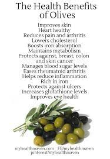
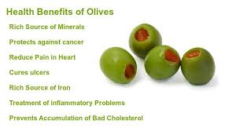
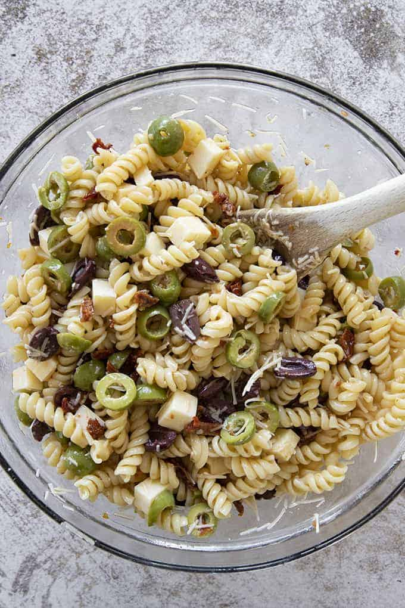
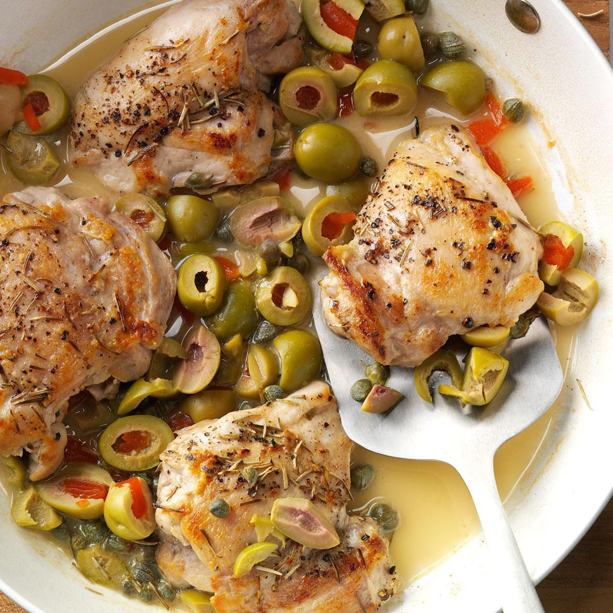

Did You Know That OLives Are Very Beneficial To Your Health?
Olives are known to lower blood pressure and offer anti-inflammatory and antioxidant properties!
This can be known to reduce diseases such as heart disease.


Dishes With Olives | Click the pictures to view the recipes |
Mr. Olive suggests these olive meals way more than salads

